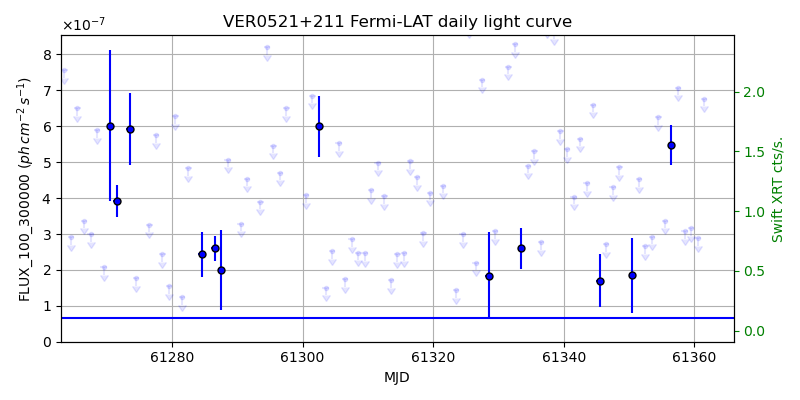

LAT Lightcurve site: https://fermi.gsfc.nasa.gov/ssc/data/access/lat/msl_lc/source/VER_0521p211
Swift site: https://www.swift.psu.edu/monitoring/source.php?source=VERJ0521+212
NED: Query
Time of last update of this page: UT: 2026-11-28 16:16 (MJD: 61372.678)
| Property | Value |
|---|---|
| R.A. | 5:21:46.08 |
| Dec. | 21:12:50.4 |
| z | 0.108 |
| 3FGL SpectrumType | PowerLaw |
| 3FGL PL Index | 1.92 |
| 3FGL Flux_100_300000 | 6.73e-08 1 / (s cm2) |
| 3FGL Flux_1000_300000 | 8.00e-09 1 / (s cm2) |
| 3FGL Flux >200 GeV | 5.96e-11 1 / (s cm2) |
| 3FGL Extrap. Crab >200 GeV | 0.25 |
| 3FGL Flux After EBL Absorption >200GeV | 3.54e-11 1 / (s cm2) |
| 3FGL EBL Crab Fraction >200GeV | 0.15 |

| MJD | dMJD | Flux | dFlux | Frac3FGL | FracCrab>200GeV | EBLFracCrab>200GeV |
|---|---|---|---|---|---|---|
| 61367.50 | 0.50 | 7.35e-06 | 0.00e+00 | 0.00 | 0.00 | 0.00 |
| 61368.50 | 0.50 | 1.07e-05 | 0.00e+00 | 0.00 | 0.00 | 0.00 |
| 61369.50 | 0.50 | 5.29e-06 | 0.00e+00 | 0.00 | 0.00 | 0.00 |
| 61370.50 | 0.50 | 1.01e-05 | 0.00e+00 | 0.00 | 0.00 | 0.00 |
| 61371.50 | 0.50 | 9.99e-06 | 0.00e+00 | 0.00 | 0.00 | 0.00 |
| MJD | dMJD | Flux | dFlux | Frac3FGL | FracCrab>200GeV | EBLFracCrab>200GeV |
|---|---|---|---|---|---|---|
| 61335.50 | 3.50 | 2.47e-07 | 7.17e-08 | 3.67 | 0.94 | 0.56 |
| 61342.50 | 3.50 | 2.35e-07 | 5.81e-08 | 3.49 | 0.89 | 0.53 |
| 61349.50 | 3.50 | 2.00e-07 | 6.63e-08 | 2.97 | 0.76 | 0.45 |
| 61356.50 | 3.50 | 2.03e-07 | 1.90e-08 | 3.02 | 0.77 | 0.46 |
| 61363.50 | 3.50 | 4.04e-07 | 0.00e+00 | 0.00 | 0.00 | 0.00 |

| MJD | dMJD | Flux | dFlux | Frac3FGL | FracCrab>200GeV | EBLFracCrab>200GeV |
|---|---|---|---|---|---|---|
| 61367.50 | 0.50 | 7.20e-07 | 0.00e+00 | 0.00 | 0.00 | 0.00 |
| 61368.50 | 0.50 | 5.38e-07 | 0.00e+00 | 0.00 | 0.00 | 0.00 |
| 61369.50 | 0.50 | 4.63e-07 | 0.00e+00 | 0.00 | 0.00 | 0.00 |
| 61370.50 | 0.50 | 6.60e-07 | 0.00e+00 | 0.00 | 0.00 | 0.00 |
| 61371.50 | 0.50 | 8.50e-07 | 0.00e+00 | 0.00 | 0.00 | 0.00 |

| MJD | dMJD | Flux | dFlux | Frac3FGL | FracCrab>200GeV | EBLFracCrab>200GeV |
|---|---|---|---|---|---|---|
| 61335.50 | 3.50 | 2.13e-08 | 6.11e-09 | 2.66 | 0.68 | 0.40 |
| 61342.50 | 3.50 | 2.89e-08 | 6.39e-09 | 3.61 | 0.92 | 0.55 |
| 61349.50 | 3.50 | 2.11e-08 | 1.62e-09 | 2.64 | 0.67 | 0.40 |
| 61356.50 | 3.50 | 2.77e-08 | 4.67e-09 | 3.46 | 0.88 | 0.52 |
| 61363.50 | 3.50 | 4.28e-08 | 0.00e+00 | 0.00 | 0.00 | 0.00 |
--------------------------------------------------------- Using user-supplied coords: 5:21:46.08 21:12:50.4 2000 --------------------------------------------------------- FLWO UT night of: 2026-11-29 Local Sid. @ Midnight: 04:08 Sunset (-15.0) (local, UT): 18:31 01:31 Sunrise (-15.0) (local, UT): 05:53 12:53 Moonrise (local, UT): 21:57 04:57 Moonset (local, UT): Moon phase: 0.72 --------------------------------------------------------- AzTime LSID UT Obj_el Obj_az Mn_el Mn_az Sep. --------------------------------------------------------- 18:31 22:39 01:31 2.5 66.3 -32.9 32.1 47.7 19:01 23:09 02:01 8.3 70.0 -29.4 38.9 48.1 19:31 23:39 02:31 14.3 73.6 -25.4 45.0 48.5 20:01 00:09 03:01 20.5 77.0 -21.0 50.6 48.8 20:31 00:39 03:31 26.7 80.4 -16.2 55.6 49.2 21:01 01:09 04:01 33.1 83.9 -11.1 60.2 49.5 21:31 01:39 04:31 39.4 87.5 -5.4 64.5 49.8 22:01 02:09 05:01 45.8 91.4 0.4 68.5 50.2 22:31 02:39 05:31 52.2 95.8 5.8 72.2 50.5 23:01 03:10 06:01 58.5 101.1 11.6 75.8 50.8 23:31 03:40 06:31 64.7 108.0 17.5 79.4 51.0 00:01 04:10 07:01 70.6 118.1 23.6 82.9 51.3 00:31 04:40 07:31 75.8 134.7 29.7 86.5 51.5 01:01 05:10 08:01 79.2 163.6 35.8 90.3 51.8 01:31 05:40 08:31 78.9 201.1 42.0 94.4 52.0 02:01 06:10 09:01 75.2 228.1 48.1 99.1 52.2 02:31 06:40 09:31 69.9 243.5 54.2 104.7 52.4 03:01 07:10 10:01 63.9 253.0 60.1 111.7 52.6 03:31 07:40 10:31 57.7 259.7 65.6 121.1 52.8 04:01 08:10 11:01 51.4 264.8 70.5 134.7 53.0 04:31 08:40 11:31 45.0 269.2 74.0 154.7 53.2 05:01 09:11 12:01 38.6 273.0 75.2 181.1 53.4 05:31 09:41 12:31 32.2 276.6 73.6 206.8 53.6 05:53 10:02 12:53 27.6 279.1 71.0 221.2 53.7 --------------------------------------------------------- Dark hours >55 deg.: 0.00